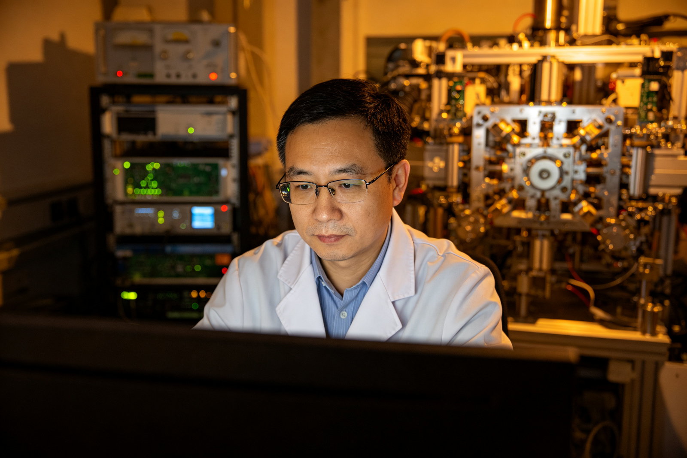
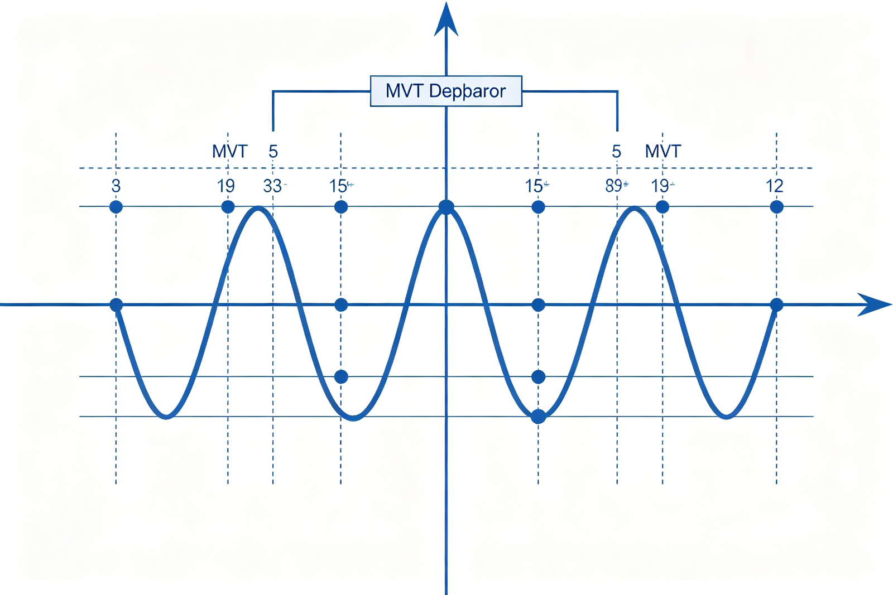
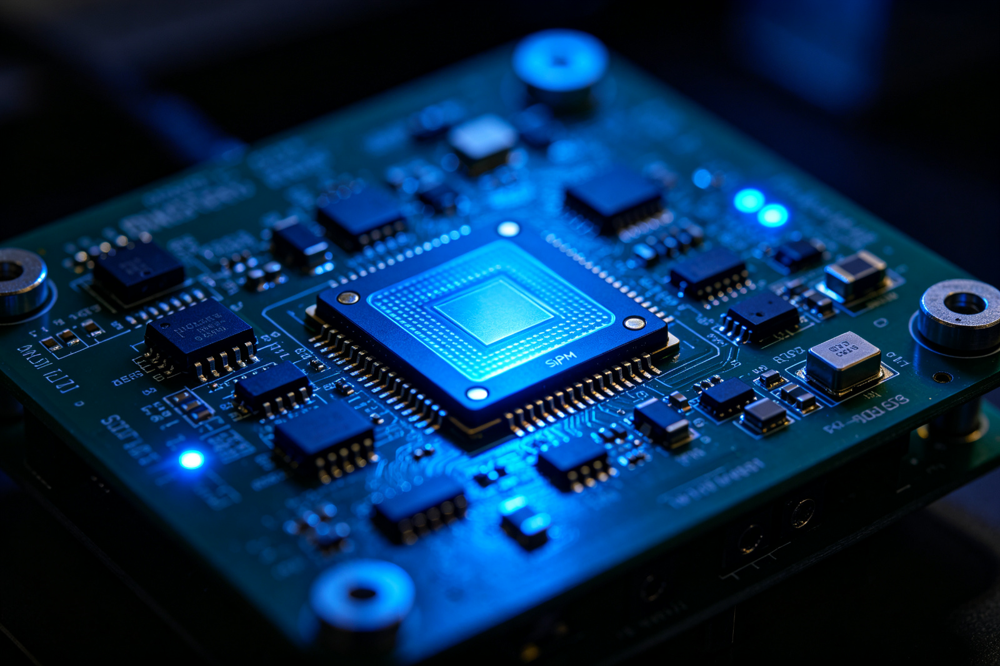
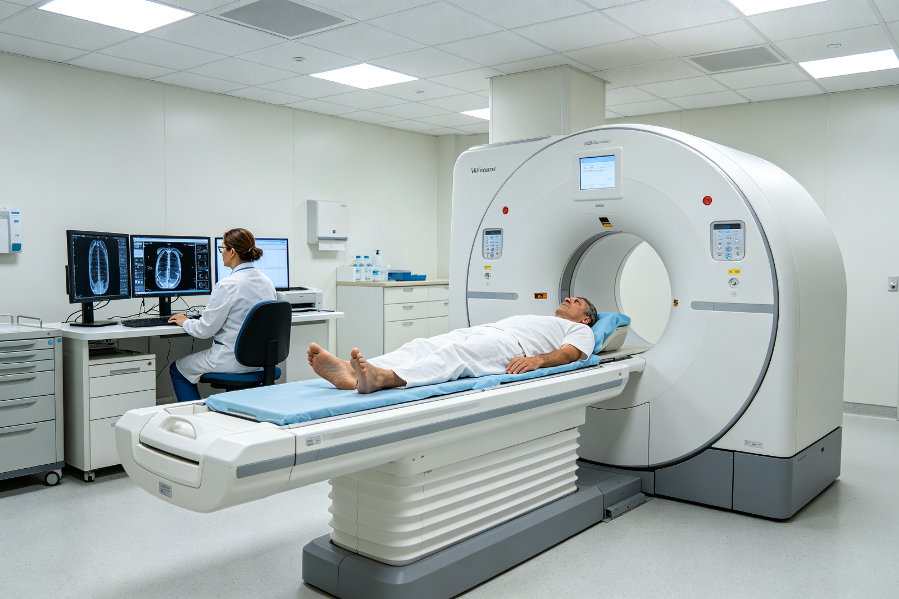

The National Science Fund for Distinguished Young Scholars Enables Me to Venture into the 'Uncharted Territory' of All-Digital PET
When it comes to cancer, many people are terrified. Now, scientists have developed a new device that can detect metabolic abnormalities in cancer cells earlier, faster, and more accurately, achieving 'early screening, early diagnosis, and early treatment' of cancer.
This device is the 'all-digital positron emission tomography (All-Digital PET)' independently developed by Professor Qingguo Xie from the University of Science and Technology of China under the National Science Fund for Distinguished Young Scholars. It is one of the most advanced medical molecular imaging devices in the world today.
In 2004, Professor Xie was the first to propose the concept of 'all-digital PET' on an international scale. Over the next two decades, he and his team completed a leap from concept to system and from principle to application.
In 2014, the 'Digital PET Imaging' project received funding under the National Science Fund for Distinguished Young Scholars. Professor Xie believes that: 'The National Science Fund for Distinguished Young Scholars particularly embodies the fairness and inclusiveness of the National Natural Science Foundation of China (NSFC). It allows hardworking frontline researchers like me to be discovered and supported, giving our grassroots team the courage and confidence to venture into the uncharted territory of all-digital PET.'

I. Application Equals Growth
On June 15, 2014, at a hotel in Beijing where National Science Fund for Distinguished Young Scholars interviews were held, Professor Xie was dressed formally and quietly reviewing his presentation on 'Digital PET Imaging' while waiting for his turn.
PET stands for Positron Emission Tomography. This detection method has extremely high biochemical sensitivity and can capture metabolic abnormalities in cells, making it highly effective in the diagnosis of malignant tumors, neurological diseases, cardiovascular diseases, etc. However, traditional PET technology has long been monopolized by Western countries with high costs and no significant breakthroughs for over 40 years, leading to issues such as 'inaccurate measurement, difficult control, and narrow application', thus failing to fully realize its potential.

To address these problems, Professor Xie took a different approach in 2004 by proposing the concept of 'all-digital PET' for the first time globally and creatively exploring the 'Multi-Voltage Threshold (MVT) Sampling Method', solving key technical challenges in the field.
After years of intensive research, fully digital PET had accumulated certain technological achievements and completed preliminary instrument development. However, further progress required substantial financial and engineering investment.
In 2011, Professor Xie submitted his application for the National Science Fund for Distinguished Young Scholars without hesitation. For him, applying to the National Science Fund for Distinguished Young Scholars was also a path of growth.
"The MVT method is a brand new sampling theory that took time to gain recognition. Applying it to all-digital PET development presented significant engineering challenges. Over three years, experts provided valuable suggestions each time I applied, and we continuously adjusted our plans accordingly." Professor Xie said, "It wasn't until 2014 that the experts felt the research framework was nearly complete."
In 2014, Professor Xie successfully obtained funding under the National Science Fund for Distinguished Young Scholars. The strong support from five experts further solidified his direction for 'Digital PET' project: self-reliance, technological maturity, and high originality.
- 2001 - Team established;
- 2004 - Proposed MVT all-digital PET method;
- 2007 - Achieved the world's first flat-panel PET;
- 2010 - The world's first digital PET scientific instrument was born;
- December 2013 - First digital PET launched;
- 2014 - 'Digital PET Imaging' project received National Science Fund for Distinguished Young Scholars funding;
- August 2015 - Successfully developed the world's first clinical whole-body all-digital PET system;
- November 2017 - The world's first proton PET prototype was successfully developed;
- August 2018 - Clinical full-body all-digital PET/CT completed clinical trials;
- September 2018 - World's first brain-specific all-digital PET developed;
- June 2019 - All-digital PET received approval from the National Medical Products Administration;
- End of 2019 - Qian Jin project concluded, and the world's first clinical whole-body digital PET obtained market access qualifications.
II. Venturing into Uncharted Territory
All-Digital PET is to traditional PET what digital cameras are to film cameras—a revolutionary technological innovation.
"All-digital PET has three key technical characteristics: modularity, full counting, and full data. It can be extended to high-sensitivity application scenarios and may also extract more physiological signals from non-image information." Professor Xie told reporters, but he is not content with merely innovating in the principles of technology.

In his view, cutting-edge scientific instruments are both tools for scientific discovery and greenhouses for technological invention, as well as platforms for interdisciplinary collaboration. In an era where basic research heavily relies on imported equipment, developing one's own instruments is crucial for leading the development of a discipline.
"PET is a typical medical-engineering intersection with high technical barriers and broad academic fields. For our grassroots team to achieve practical application of all-digital PET devices and fully realize their unique performance potential, it is like climbing a mountain." Professor Xie said. The National Science Fund for Distinguished Young Scholars's support played a decisive role in this.
"The National Science Fund for Distinguished Young Scholars was my 'angel investor'. When we first entered the field, we did not follow the mature technology routes of Western companies but instead opened up a new path. I had many doubts about whether it would work and if our direction was correct." Professor Xie said, "The National Science Fund for Distinguished Young Scholars provided us with critical financial support as well as an authoritative platform recognized by academia and high-level expert resources, giving me the confidence to proceed."

By the end of 2019 when the Qian Jin project concluded, the world's first clinical whole-digital PET had already obtained market access qualifications, achieving a breakthrough from principle innovation to clinical application. 'Compared with the massive investments and manpower in high-end medical device fields, we only spent one-tenth of the funds and one-hundredth of the manpower.' Professor Xie said.
"We have contributed new standards for evaluating all-digital PET. Previously, advancements in PET products were measured by CT rows; more rows meant higher quality. Now, whether a PET product is 'all-digital' has become the highest technical standard for measuring its advancement." Professor Xie told China Science Daily.
III. A Long Road Ahead
In Professor Xie's view, writing an application for the National Science Fund for Distinguished Young Scholars essentially involves posing questions. Researchers refine their research direction and academic ideas through continuous responses to expert doubts and revisions of the application, which is crucial for subsequent scientific research.
"During the process of applying for the National Science Fund for Distinguished Young Scholars, our understanding of all-digital PET deepened through communication with experts, giving me a clearer roadmap for my research." Professor Xie said.
Next, he hopes to turn the Digital PET Laboratory into a 'century-old shop', emphasizing interdisciplinary, inter-institutional, and international cooperation as key points, encouraging more young doctors and scientists to join in.
Professor Xie believes that researchers engaged in basic science also bear additional responsibilities. "In transitioning from 'Made in China' to 'Created in China,' market and application issues have become increasingly prominent. If digital PET were to proceed solely based on the market, it would be difficult due to a lack of past performance and brand recognition. This necessitates national-level demonstration support like the National Science Fund for Distinguished Young Scholars."
He looks forward to future iterations of the National Science Fund for Distinguished Young Scholars placing greater emphasis on building an innovative ecosystem, such as establishing rapid channels for converting research outcomes into practical applications, setting up open data sharing platforms, and mechanisms for high-end experimental facility sharing.
Furthermore, regarding recent reforms introduced by NSFC for the National Science Fund for Distinguished Young Scholars, Professor Xie believes that 'the evaluation system with tiered assessment and continued funding, relaxing age limits for female applicants, etc., are important steps towards a more open, inclusive, and scientific direction. Especially implementing tiered assessments and continued funding mechanisms emphasizes the project nature of the National Science Fund for Distinguished Young Scholars, encouraging researchers to produce high-quality research outcomes continuously.'